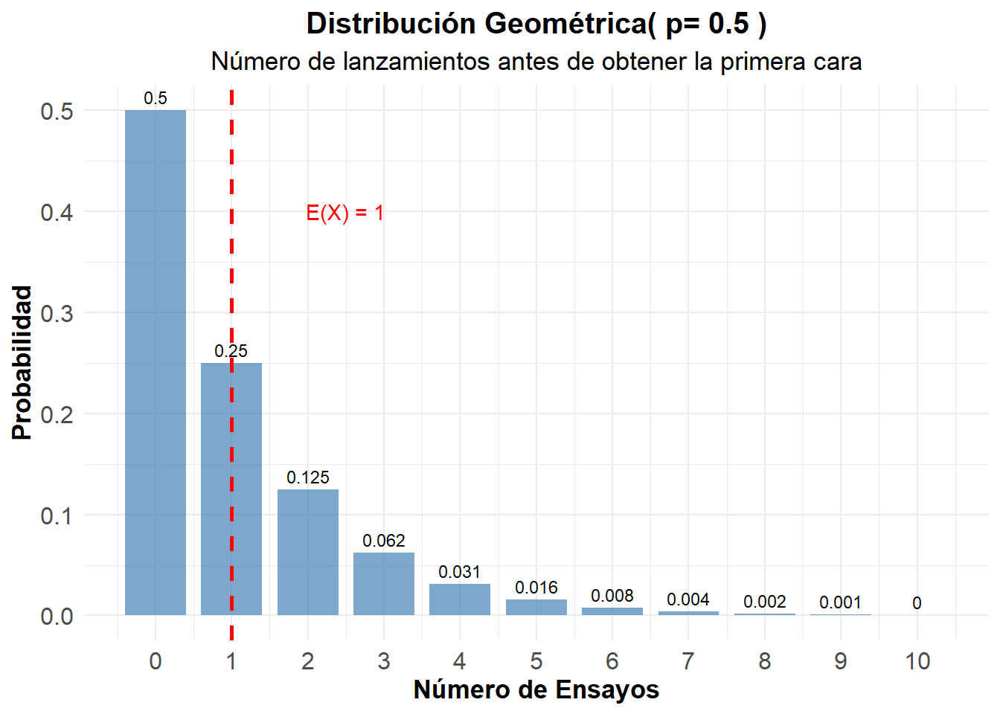
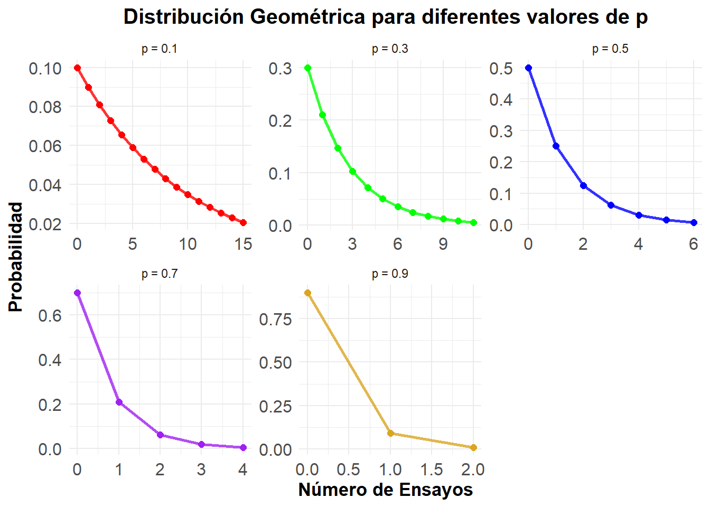

La distribución geométrica modela el número de ensayos independientes de Bernoulli necesarios antes de obtener el primer éxito. Es fundamental para analizar tiempos de espera y procesos que involucran la búsqueda del primer evento exitoso.
Definición 3.1 Una variable aleatoria \(X\) sigue una distribución geométrica si representa el número de ensayos necesarios antes de obtener el primer éxito en una sucesión de ensayos independientes de Bernoulli. Si la probabilidad de éxito en cada ensayo es \(p\), entonces la función de probabilidad está dada por:
Ejemplo 3.1 Lanzamiento de monedas: Búsqueda de la primera cara. Consideramos una moneda justa (\(p=0.5\)), y queremos modelar el número de lanzamientos hasta antes de obtener la primera cara.
Código
# Parámetrop_cara <-0.5# Calcular probabilidades para los primeros 11 ensayosk_moneda <-0:10# Prefijo d (density) sufijo es el de la vaprob_geometrica <-dgeom(k_moneda , p_cara) # Crear tablageometrica_moneda <-data.frame(Ensayo = k_moneda,Probabilidad = prob_geometrica,Prob_Acumulada =pgeom(k_moneda, p_cara))kable(geometrica_moneda, caption ="Distribución Geométrica - Primera cara (p = 0.5)",digits =4,col.names =c("Ensayo", "P(X = x)", "P(X ≤ x)")) %>%kable_styling(bootstrap_options ="striped")
#| label: grafico-geometrica-basico#| fig-cap: "Distribución Geométrica - Primera cara en lanzamiento de moneda"ggplot(geometrica_moneda, aes(x = Ensayo, y = Probabilidad)) +geom_col(fill ="steelblue", alpha =0.7, width =0.8) +geom_text(aes(label =round(Probabilidad, 3)), vjust =-0.5, size =3) +geom_vline(xintercept = media_moneda, color ="red", linetype ="dashed", linewidth =1) +annotate("text", x = media_moneda +1.5, y =max(prob_geometrica) *0.8, label =paste("E(X) =", media_moneda), color ="red") +scale_x_continuous(breaks = k_moneda) +labs(title =paste("Distribución Geométrica( p=", p_cara, ")"),subtitle ="Número de lanzamientos antes de obtener la primera cara",x ="Número de Ensayos",y ="Probabilidad") +theme_minimal() +theme(legend.title =element_text(size=13, face="bold"),legend.text =element_text(size=13),plot.title =element_text(size=15, face="bold", hjust =0.5),plot.subtitle =element_text(size=13, hjust =0.5),axis.text.x=element_text(size=12),axis.text.y=element_text(size=12),axis.title.x =element_text(face="bold", size=13),axis.title.y =element_text(face="bold", size=13)# panel.grid.major.y = element_line(color = "#ECF0F1", linewidth = 0.5,# linetype = "dashed"),# panel.grid.minor.y = element_blank(),# panel.grid.major.x = element_blank(),# panel.background = element_rect(fill = "#FAFAFA", color = NA),# plot.background = element_rect(fill = "white", color = NA) )

3.3 Comparación: Efecto del parámetro
A continuación exploramos cómo varía la distribución geométrica al cambiar el parámetro \(p\).
Código
# Diferentes probabilidades de éxitop_values <-c(0.1, 0.3, 0.5, 0.7, 0.9)k_max <-15# Crear data frame para comparacióngeometrica_comp <-data.frame()for(p in p_values) { k_vals <-0:k_max probs <-dgeom(k_vals, p) temp_data <-data.frame(p_label =paste("p =", p),k = k_vals,probabilidad = probs,media = (1-p)/p,varianza = (1-p)/(p^2) ) geometrica_comp <-rbind(geometrica_comp, temp_data)}# Tabla de parámetrosparametros_comp <-data.frame(p = p_values,Media = (1-p_values)/p_values,Varianza = (1-p_values)/(p_values^2),Desv_Std =sqrt((1-p_values)/(p_values^2)))kable(parametros_comp, caption ="Parámetros de la distribución geométrica para diferentes valores de p",digits =4,col.names =c("p", "Media", "Varianza", "Desv. Std")) |>kable_styling(bootstrap_options ="striped")
Parámetros de la distribución geométrica para diferentes valores de p
p
Media
Varianza
Desv. Std
0.1
9.0000
90.0000
9.4868
0.3
2.3333
7.7778
2.7889
0.5
1.0000
2.0000
1.4142
0.7
0.4286
0.6122
0.7825
0.9
0.1111
0.1235
0.3514
Código
# Filtrar para mejor visualizacióngeometrica_filtered <- geometrica_comp[geometrica_comp$probabilidad >0.005, ]ggplot(geometrica_filtered, aes(x = k, y = probabilidad, color = p_label)) +geom_line(linewidth =1, alpha =0.8, show.legend =FALSE) +geom_point(size =2, show.legend =FALSE) +scale_color_manual(values =c("red", "green", "blue", "purple", "goldenrod")) +facet_wrap(~p_label, scales ="free") +labs(title ="Distribución Geométrica para diferentes valores de p",x ="Número de Ensayos",y ="Probabilidad",color ="Parámetro") +theme_minimal() +theme(legend.title =element_text(size=13, face="bold"),legend.text =element_text(size=13),plot.title =element_text(size=15, face="bold", hjust =0.5),plot.subtitle =element_text(size=13, hjust =0.5),axis.text.x=element_text(size=12),axis.text.y=element_text(size=12),axis.title.x =element_text(face="bold", size=13),axis.title.y =element_text(face="bold", size=13)# panel.grid.major.y = element_line(color = "#ECF0F1", linewidth = 0.5,# linetype = "dashed"),# panel.grid.minor.y = element_blank(),# panel.grid.major.x = element_blank(),# panel.background = element_rect(fill = "#FAFAFA", color = NA),# plot.background = element_rect(fill = "white", color = NA) )

Distribución Geométrica para diferentes valores de p
3.4 Propiedades Importantes
3.4.1 Propiedad de Pérdida de Memoria
Sea \(X\sim geo(p)\) Entonces para cualesquiera enteros \(s, t \geq 0\) se cumple la propiedad de pérdida de memoria:
\[P(X \geq s + t | X \geq s) = P(X \geq t)\]
Verificación Numérica
Consideremos una variable aleatoria geométrica con \(p=0.3\), y verifiquemos la propiedad para \(s=5\) y \(t=3\).
Código
# Demostración de la propiedad de falta de memoriap_mem <-0.3s <-5t <-3# P(X >= s + t)prob_s_t <-1-pgeom(s + t-1, p_mem) # P(X >= s) prob_s <-1-pgeom(s-1, p_mem)# P(X >= t) prob_t <-1-pgeom(t-1, p_mem)# P(X >= s + t | X >= s) = P(X >= s + t) / P(X >= s)prob_condicional <- prob_s_t / prob_scat("Demostración de la Propiedad de Falta de Memoria:\n")
Demostración de la Propiedad de Falta de Memoria:
Código
cat("Parámetros: p =", p_mem, ", s =", s, ", t =", t, "\n\n")
Ejercicio 3.2 Generar \(k=1000\) muestras de tamaño \(n=50\) de una distribución geométrica para alguna \(p\), y verificar el Teorema Central del Límite para las medias muestrales.